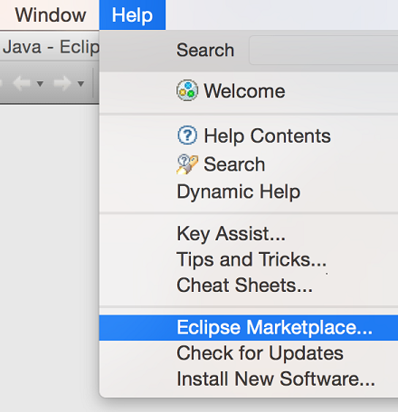
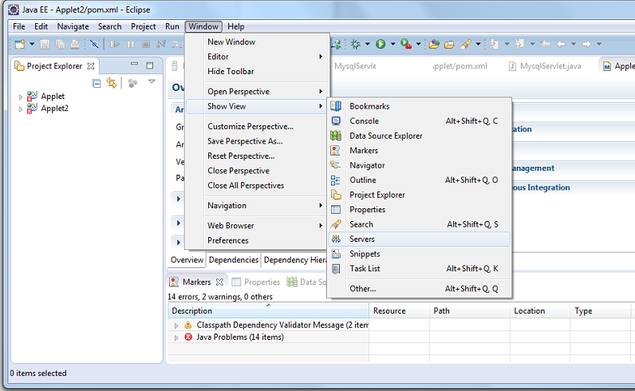
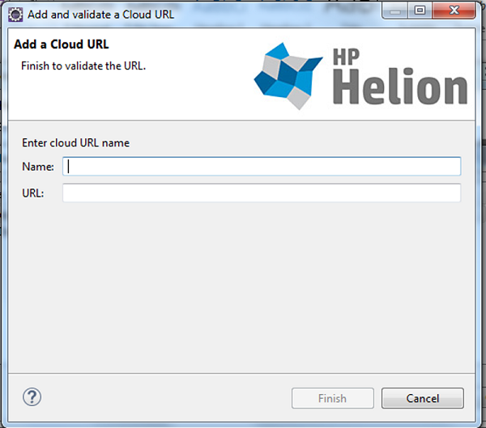
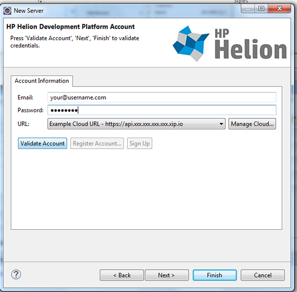
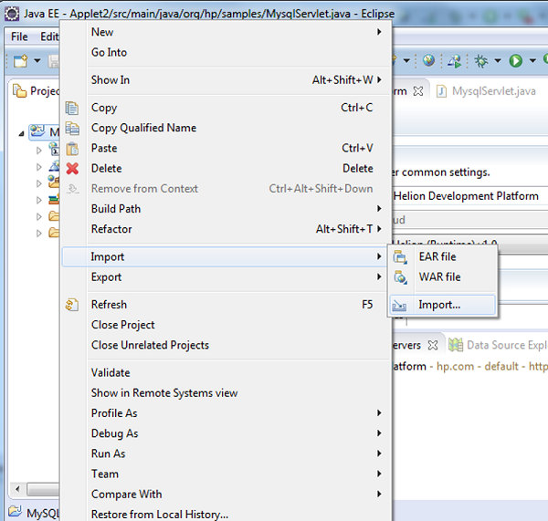
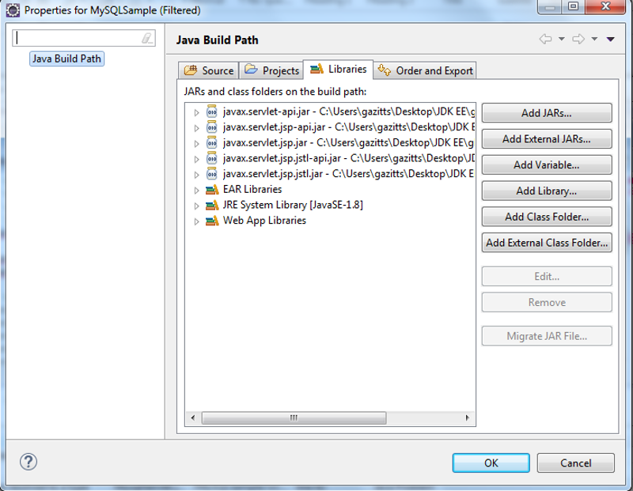
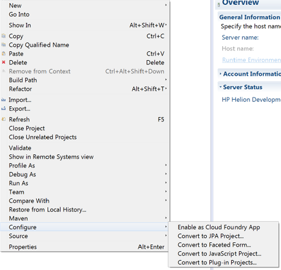
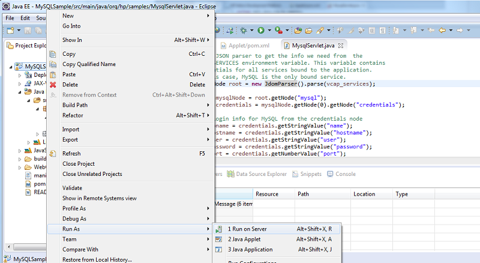
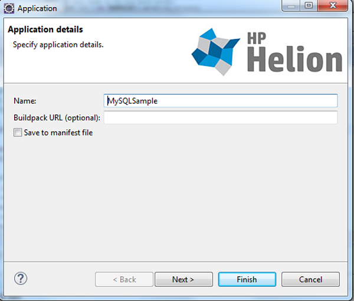
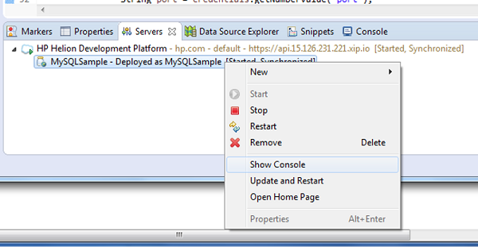

If you're building apps in Eclipse, use this plugin to configure, package, and deploy your app directly to HPE Helion Development Platform.
Follow the steps outlined in this document to get the plugin up and running and to deploy one of the sample apps.
Prerequisites
If you'd like to deploy the provided Java
samples, you will need to install the following prerequisites. If
necessary, locate the version appropriate for your environment and install it before
continuing.
Installation
- Open the Eclipse IDE and install the plugin through the Eclipse Marketplace dialog. You
can find this dialog by clicking on Help and then Eclipse
Marketplace.

- Type in the text Helion and hit go to find the Helion Eclipse plugin in the marketplace.
- Click on Install and follow the prompts to install the HPE Helion Development Platform Eclipse Plugin.
- Once the packages are discovered, ensure HPE Helion Development Platform is checked and click Confirm.
- Accept the license agreement and Finish the wizard.
- You will be prompted to restart Eclipse.
Setup/Configuration
- Once Eclipse has reloaded, open the Servers window by navigating to Window-> Show View-> Servers. Note that if you have a different version of Eclipse, you might need to go to Window -> Show View -> Other -> Servers.

- Launch the HPE Helion Development Platform plugin by clicking on the Add New Server link in the Servers window.
- Select HPE Helion Development Platform from the tree view and click Next.
- Add a new Cloud URL by hitting the Manage Cloud button. Enter the URL of your ALS cluster and
give it a name.

Note: You may receive a warning that the peer is not authenticated, this
is expected behavior as ALS images use a self-signed certificate. Select Yes
when prompted with this error message.

- Enter the credentials used to access your ALS cluster in the resulting dialog and then click
Validate Account to ensure that the plugin can access the URL.
Note: If you encounter issues validating the connection, ensure that your
proxy settings are configured correctly, and that you have access to the ALS
cluster endpoint. Contact your IT Administrator for more help regarding
network settings and trouble shooting. Note that you might get a warning
about the site using a self-signed certificate. This warning can be
safely ignored.
- Click Next to list your organizations
and spaces. Pick an organization and space to work with in this connection and click
Yes to import them into the IDE. Click Finish. If you do not have
an organization or space set up, please create those through your ALS console by
visiting the endpoint URL in a browser window.
- Now you should see Helion
Development Platform as a configured Server in your IDE. You can explore the
apps that have been deployed already, or continue reading to learn how to deploy a
sample app.
Usage
In order to demonstrate how the plugin works, we'll use a simple Java sample app that connects to a MySQL service. If you'd like to follow along, download and install the sample on your development machine. If not, please skip the following 5 steps.
- Start by adding a new project. Right-click on Project Explorer and select New > Dynamic Web Project. Name the project MySQLSample and then click Finish.
- Right-click the new MySQLSample project and import the sample app by clicking on Import > Import.

- Then import the sample app through your preferred method. In this case we'll import from a directory on the file system. Make sure that you click on the checkbox to import all files in the directory. Then click Finish.
- If you'd like to modify the sample and build it locally, ensure that all references can be resolved. This sample uses javax.servlet and net.sourceforge.argo. Note that they are declared in the POM.xml file. To resolve these references, navigate to the files with reference warnings and click on the red squiggle. Alternatively, if you have Maven installed in Eclipse, you can build with Maven to resolve the references.
- For this sample, you also need to import two external jar files. You can find the
javax.servlet.* modules in the Java EE SDK under the Glassfish directory. The
Argo modules can be downloaded here.

Deploy sample
Now that our Sample app is set up, let's deploy it using the Helion Development Platform plugin.
- Right-click the project in Project Explorer and select Configure > Enable as Cloud Foundry App.

- We'll deploy this app to the Helion Development Platform by right-clicking on the project and selecting Run As > Run on Server.

- Select Helion Development Platform and click Next. You can check the box to skip this step in future deployments.
- Next specify a name for your app and optionally pick a specific custom buildpack. You can save
these settings to your manifest if you'd deploy using the command-line tools in
the future. Since this is a standard Java applet, we'll stick with the default
buildpack that is built into Helion Development Platform.

- You can see the deployment progressing in the console.
Once your app is deployed, you can use the plugin to interact with it directly from Eclipse. You
can select Show Console to bring up the ALS console. You can view the app in
the browser by selecting Open Home Page and you can also stop/restart/remove
it.
